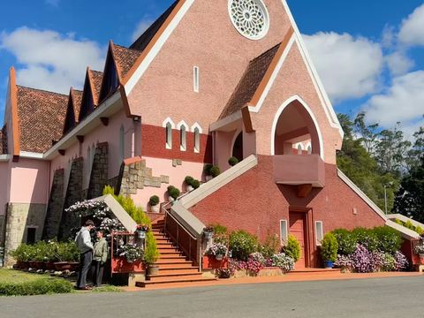

Fácil en scooter eléctrico Mejor en Honda Air Blade 125cc (cuestas / trayecto largo)
Horarios de Google Maps (octubre 2026); pueden cambiar, compruébalos antes de ir. · ≈ km desde el lago Xuan Huong (en línea recta)
- 1Lago Xuan Huong
≈ 0.0 km · Horario: zona abierta, a cualquier hora · Mejor hora: Amanecer
Niebla sobre el agua al alba; vuelta al lago de unos 5 km.
📍 Cómo llegar · 📷 Ver fotos - 2Plaza Lam Vien
≈ 0.4 km · Horario: abierto 24 horas · Mejor hora: Por la noche
Cúpulas de cristal gigantes con forma de alcachofa y girasol, iluminadas de noche.
📍 Cómo llegar · 📷 Ver fotos - 3Mercado y mercado nocturno de Da Lat
≈ 0.6 km · Horario: zona abierta, a cualquier hora · Mejor hora: Desde las 18:00
Comida callejera y la escalinata del mercado: el corazón nocturno de la ciudad.
📍 Cómo llegar · 📷 Ver fotos - 4Catedral de Da Lat («iglesia del Gallo»)
≈ 0.7 km · Horario: se ve desde fuera (abre en horario de misa) · Mejor hora: Última hora de la tarde
Iglesia de la época francesa con un gallo en lo alto de la torre.
📍 Cómo llegar · 📷 Ver fotos - 5

Domaine de Marie (iglesia rosa)
≈ 1.6 km · Horario: 7:30–11:30, 13:30–17:30 · Mejor hora: Mañana
Muros rosas y un jardín tranquilo en la colina; entrada libre.
📍 Cómo llegar · 📷 Ver fotos - 6Crazy House
≈ 1.3 km · Horario: 8:30–18:30 · Mejor hora: Nada más abrir
Torres y puentes de cuento; ve pronto antes de las multitudes.
📍 Cómo llegar · 📷 Ver fotos - 7Estación de tren de Da Lat
≈ 1.4 km · Horario: de día · Mejor hora: Mañana
Colorida estación de los años 30; tren antiguo a Trai Mat.
📍 Cómo llegar · 📷 Ver fotos - 8Palacio de verano de Bao Dai
≈ 1.8 km · Horario: 7:00–17:30 · Mejor hora: Mañana
Villa del último emperador entre pinos.
📍 Cómo llegar · 📷 Ver fotos - 9Pueblo de flores Van Thanh
≈ 3.2 km · Horario: 7:00–17:00 · Mejor hora: Mañana
Campos de flores e invernaderos al oeste de la ciudad.
📍 Cómo llegar · 📷 Ver fotos - 10Valle del Amor
≈ 4.3 km · Horario: 7:30–17:00 · Mejor hora: Mañana
Lago, pinos y jardines al norte de la ciudad.
📍 Cómo llegar · 📷 Ver fotos - 11Cascada Datanla
≈ 4.2 km · Horario: 7:30–16:30 · Mejor hora: Mañana
Cascadas en el bosque y un tobogán alpino.
📍 Cómo llegar · 📷 Ver fotos - 12Monasterio Truc Lam
≈ 4.2 km · Horario: 7:00–17:00 · Mejor hora: Primera hora
Monasterio zen sobre el lago Tuyen Lam; ropa discreta.
📍 Cómo llegar · 📷 Ver fotos - 13Pagoda Linh Phuoc
≈ 6.3 km · Horario: de día · Mejor hora: Mañana
Dragón de mosaico hecho con trozos de botellas y cerámica.
📍 Cómo llegar · 📷 Ver fotos - 14Clay Tunnel
≈ 7.2 km · Horario: 7:00–17:00 · Mejor hora: Tarde
Esculturas gigantes de arcilla roja junto al lago Tuyen Lam.
📍 Cómo llegar · 📷 Ver fotos - 15Monte Lang Biang
≈ 8.9 km · Horario: 7:30–17:00 · Mejor hora: Mañana
Gran vista del valle de Lac Duong; subida empinada.
📍 Cómo llegar · 📷 Ver fotos - 16Colinas de té de Cau Dat
≈ 14.6 km · Horario: 6:00–18:00 · Mejor hora: Primera hora
Plantaciones de té y nubes por la mañana; abre a las 6:00.
📍 Cómo llegar · 📷 Ver fotos
Temporadas que merecen la pena
- Girasoles silvestres (dã quỳ) — finales de oct. – dic.
- Colinas de hierba rosa (cỏ hồng) — nov. – dic.
- Cerezos en flor (mai anh đào) — finales de ene. – feb.
- Caza de nubes — a primera hora tras una noche de lluvia
Consejos de fotos y conducción
- Mejor luz: 5:30–7:30 y 16:00–17:30.
- Las mañanas son frías: lleva chaqueta.
- Nunca pares en una curva para una foto; apártate del todo al arcén.
- En Vietnam se circula por la derecha. Casco siempre.
Alquiler de motos en Da Lat
Honda Vision, Honda Air Blade 125cc y scooters eléctricos — 150.000 VND al día, sin depósito en efectivo, casco gratis, entrega en el hotel a partir de 2 días.
Alquiler de motos Da Lat · Alquiler de scooter eléctrico en Da Lat